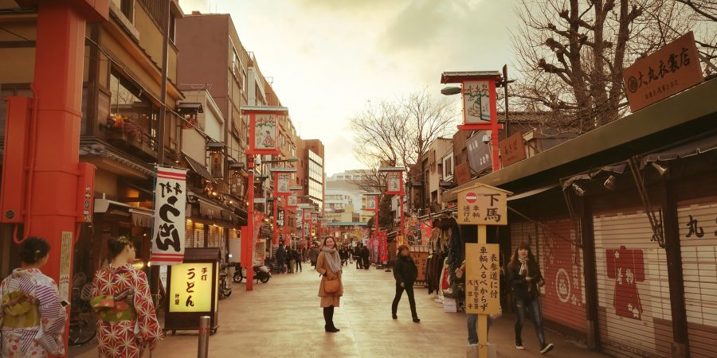
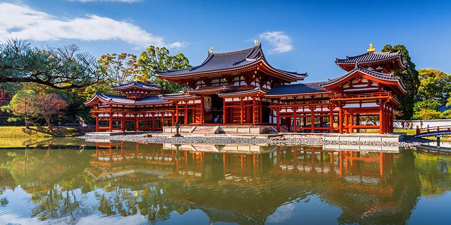

Japan is an archipelago, or string of islands, on the eastern edge of Asia. There are four main islands: Hokkaido, Honshu, Shikoku, and Kyushu. There are also nearly 4,000 smaller islands! Japan's nearest mainland neighbors are the Siberian region of Russia in the north and Korea and China farther south.
Almost four-fifths of Japan is covered with mountains. The Japanese Alps run down the center of the largest island, Honshu. The highest peak is Mount Fuji, a cone-shaped volcano considered sacred by many Japanese.

When to go
Japan, while not especially large, is surprisingly varied when it comes to weather. Frigid winters at the northernmost tip of Hokkaido make the subtropical islands of southern Okinawa seem worlds away. The rainy season typically runs from early June to mid-July throughout most of the country — Tokyo included — except in Okinawa where showers begin in early May. Meanwhile, in Hokkaido, summertime brings mild temperatures and blue skies.
If you aren't hitting the ski slopes, March to May and September to November are generally considered the best times to visit the country for pleasant weather. That's when travelers can find the iconic cherry blossoms that seem straight out of a postcard, or, on the other hand, vivid autumnal leaves. During these seasons, rainfall is minimal, skies are clear, and temperatures are mild, ranging from 50 to 70 degrees Fahrenheit most days.
For those not averse to heat and humidity, summer brings a different tempo to Japan. It's a time of year perfect for exploring nature — ideally, somewhere cool up a mountain or as far north as possible. The lusciously cooler climes of Hokkaido are heaven in the summer, with rainbow-bright flower fields and countless outdoor activities, from hiking to horseback riding.
In the winter, the northernmost prefecture of Hokkaido is undeniably the best place to ski or snowboard, but areas outside of Tokyo, such as Niigata, are only a Shinkansen ride away and boast great alpine resorts. Those who prefer the warmth would do best to fly south to Okinawa during the winter for a more subtropical climate.

Culture and customs
Japanese culture is a set of values that puts importance on social harmony and hard work. Up until the 10th century, Japanese culture was similar to the Chinese culture, but the rise of the samurai in the Heian Period and the isolation during the Edo Period changed the rules of society. Overall, the culture was influenced by the local Shinto religion, Buddhism, Confucianism and the limited natural resources.
While Japanese lifestyle has been Westernized recently, Japanese people still do everything possible to preserve their rich cultural heritage by practicing tea ceremony, wearing kimono and studying traditional arts and crafts from early childhood.